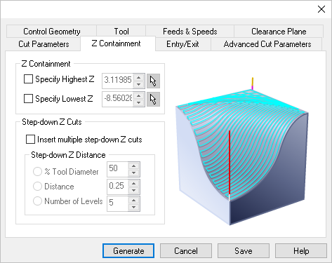

The following Z Containment tab for the 3 Axis operations listed below, allows you to contain the toolpath in Z level by specifying High Z and Low Z values either by inputting the values or by picking the Z height from the 3D model. Refer to each option below. Some or all of these parameters are supported by the following operations listed below.
Parallel Finishing, 3 Axis Radial Machining, 3 Axis Spiral Machining, 3 Axis Projection Pocketing, 3 Axis Steeps (Parallel Hill) Machining, 3 Axis |
 Dialog Box: Z Containment tab, 3 Axis Operations |
Specifying a Z level containment limits the toolpath to high z or low Z values.
|
You can also check the box to Insert multiple step-downs in Z cuts for the operation. The step down Z distance can be specified as a % Tool Diameter, a Distance or as the Number of Levels.
|